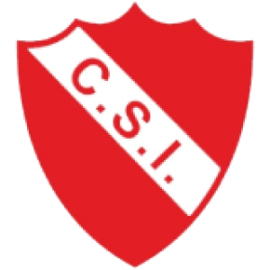

El Club Sportivo Independiente, fundado el 20 de agosto de 1920, es una de las instituciones más gloriosas y representativas de General Pico. Conocido cariñosamente como "El Rojo" y ubicado estratégicamente sobre la Avenida San Martín, el club ha sido durante más de un siglo un pilar en la vida social, cultural y deportiva de la ciudad, formando a miles de jóvenes en sus instalaciones.
Si bien se destaca en múltiples deportes y compite habitualmente en la Liga Pampeana de Fútbol, Independiente escribió las páginas más doradas de su historia en el básquetbol. Durante la década de 1990, el equipo conquistó la Liga Nacional de Básquet (LNB) en la temporada 1994/95 y se coronó Campeón Sudamericano en 1996. Su mítico estadio cerrado, "El Gigante de la Avenida", fue testigo de noches inolvidables y vio brillar a grandes leyendas del básquet argentino. Hoy en día, el club sigue siendo una potencia formativa y competitiva en disciplinas como básquet, fútbol, handball y tenis.